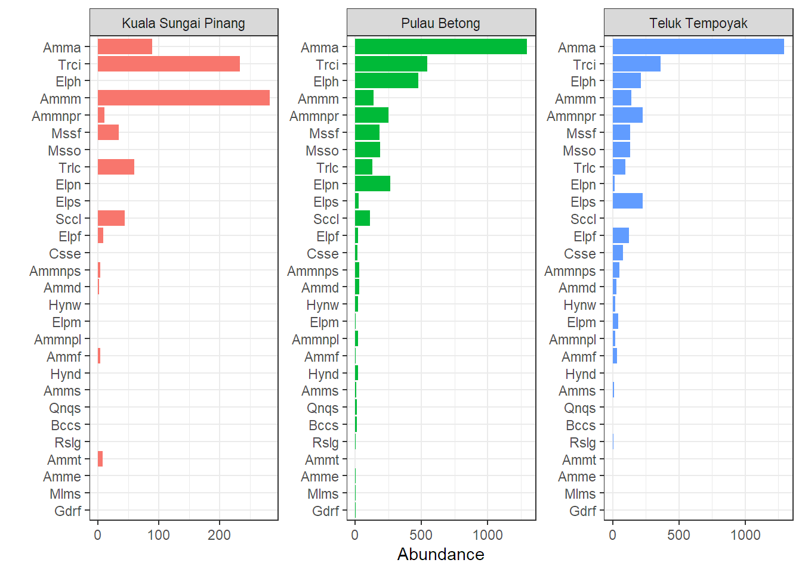
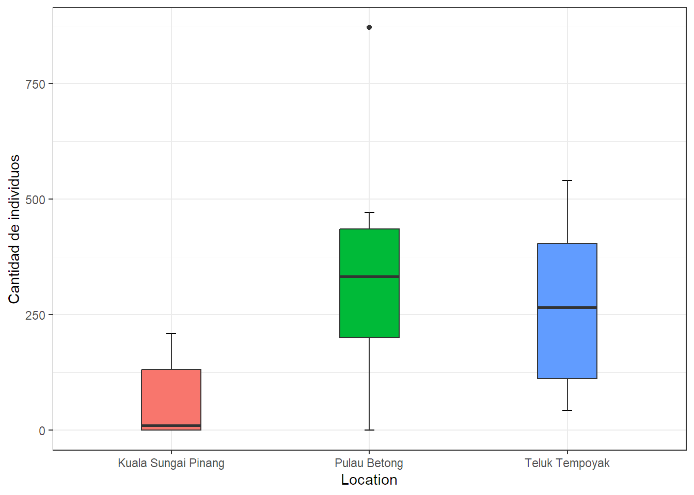
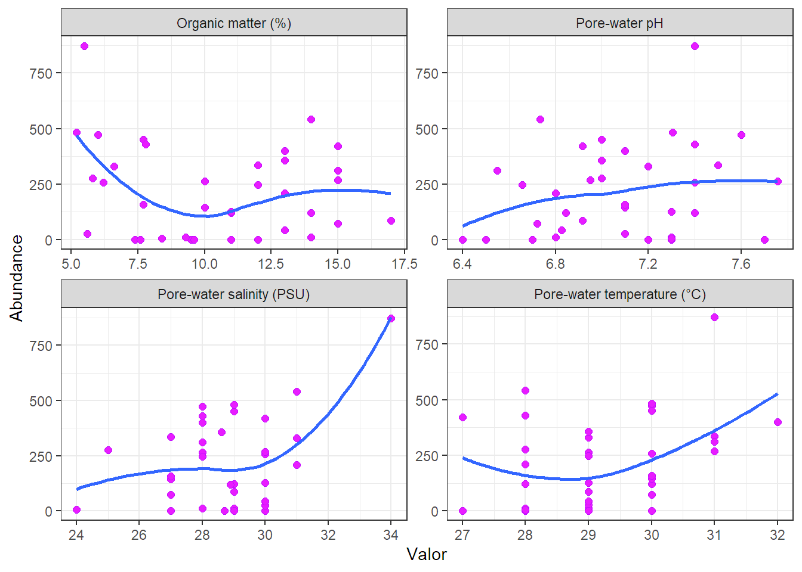

library(tidyverse)
library(ggplot2)
library(readxl)Tidy Foraminiferos béntonicos
Taller práctico en casa 2
Pautas Taller 1.
Construya un documento tipo .qmd que incluya tanto línea de código como salidas que muestre:
1. Cargue de librerías requeridas.
2. Importación de los datos emplear.
Importe los datos de la hoja Bio bajo ese mismo nombre y al igual que los de la hoja Env.
3. Total por Rank Taxa.
Una tabla con el número total de especies y géneros registrados en el área de muestreo; es decir que se evidencie, ¿Cuántos registros hay de cada nivel taxonómico?
| Species | Genus |
|---|---|
| 28 | 13 |
4. Sp por status y sitio.
Una tabla con la cantidad de individuos colectados por especie y localidad en filas ambas variables y Zona en Columna.
| Location | Specie | Lower | Middle | Upper |
|---|---|---|---|---|
| Kuala Sungai Pinang | Ammonia aoteana | 16 | 73 | 0 |
| Kuala Sungai Pinang | Ammonia directum | 2 | 0 | 0 |
| Kuala Sungai Pinang | Ammonia exiguus | 0 | 0 | 0 |
| Kuala Sungai Pinang | Ammonia fragile | 4 | 0 | 0 |
| Kuala Sungai Pinang | Ammonia mexicana | 270 | 0 | 12 |
| Kuala Sungai Pinang | Ammonia perlucida | 8 | 0 | 3 |
| Kuala Sungai Pinang | Ammonia pseudocassis | 4 | 0 | 0 |
| Kuala Sungai Pinang | Ammonia pulchella | 0 | 0 | 0 |
| Kuala Sungai Pinang | Ammonia salsa | 0 | 0 | 0 |
| Kuala Sungai Pinang | Ammonia triperforata | 8 | 0 | 0 |
| Kuala Sungai Pinang | Buccella striatula | 0 | 0 | 0 |
| Kuala Sungai Pinang | Cassidelina exilis | 0 | 0 | 0 |
| Kuala Sungai Pinang | Elphidium fijiense | 0 | 9 | 0 |
| Kuala Sungai Pinang | Elphidium hispidulum | 0 | 0 | 0 |
| Kuala Sungai Pinang | Elphidium macrescens | 0 | 0 | 0 |
| Kuala Sungai Pinang | Elphidium neosimplex | 0 | 0 | 0 |
| Kuala Sungai Pinang | Elphidium sandiegoense | 0 | 0 | 0 |
| Kuala Sungai Pinang | Gaudryina fijiensis | 0 | 0 | 0 |
| Kuala Sungai Pinang | Haynesina depressula | 0 | 0 | 0 |
| Kuala Sungai Pinang | Haynesina wilberti | 0 | 0 | 0 |
| Kuala Sungai Pinang | Massilina fusca | 34 | 0 | 0 |
| Kuala Sungai Pinang | Massilina obliqua | 0 | 0 | 0 |
| Kuala Sungai Pinang | Miliammina salsa | 0 | 0 | 0 |
| Kuala Sungai Pinang | Quinqueloculina seminula | 0 | 0 | 0 |
| Kuala Sungai Pinang | Rosalina globularis | 0 | 0 | 0 |
| Kuala Sungai Pinang | Saccammina lobata | 44 | 0 | 0 |
| Kuala Sungai Pinang | Triloculina comprimata | 60 | 0 | 0 |
| Kuala Sungai Pinang | Trochammina inflata | 233 | 0 | 0 |
| Pulau Betong | Ammonia aoteana | 60 | 1236 | 0 |
| Pulau Betong | Ammonia directum | 20 | 0 | 8 |
| Pulau Betong | Ammonia exiguus | 0 | 0 | 2 |
| Pulau Betong | Ammonia fragile | 2 | 0 | 3 |
| Pulau Betong | Ammonia mexicana | 72 | 5 | 61 |
| Pulau Betong | Ammonia perlucida | 199 | 41 | 10 |
| Pulau Betong | Ammonia pseudocassis | 15 | 0 | 14 |
| Pulau Betong | Ammonia pulchella | 12 | 10 | 0 |
| Pulau Betong | Ammonia salsa | 3 | 0 | 4 |
| Pulau Betong | Ammonia triperforata | 0 | 0 | 0 |
| Pulau Betong | Buccella striatula | 0 | 13 | 0 |
| Pulau Betong | Cassidelina exilis | 14 | 0 | 2 |
| Pulau Betong | Elphidium fijiense | 13 | 8 | 0 |
| Pulau Betong | Elphidium hispidulum | 5 | 472 | 0 |
| Pulau Betong | Elphidium macrescens | 1 | 0 | 0 |
| Pulau Betong | Elphidium neosimplex | 0 | 266 | 0 |
| Pulau Betong | Elphidium sandiegoense | 21 | 4 | 0 |
| Pulau Betong | Gaudryina fijiensis | 1 | 0 | 0 |
| Pulau Betong | Haynesina depressula | 19 | 0 | 0 |
| Pulau Betong | Haynesina wilberti | 13 | 4 | 6 |
| Pulau Betong | Massilina fusca | 25 | 0 | 160 |
| Pulau Betong | Massilina obliqua | 61 | 102 | 24 |
| Pulau Betong | Miliammina salsa | 0 | 0 | 1 |
| Pulau Betong | Quinqueloculina seminula | 0 | 13 | 0 |
| Pulau Betong | Rosalina globularis | 0 | 3 | 0 |
| Pulau Betong | Saccammina lobata | 19 | 0 | 94 |
| Pulau Betong | Triloculina comprimata | 35 | 0 | 96 |
| Pulau Betong | Trochammina inflata | 156 | 3 | 383 |
| Teluk Tempoyak | Ammonia aoteana | 1194 | 99 | 4 |
| Teluk Tempoyak | Ammonia directum | 18 | 4 | 5 |
| Teluk Tempoyak | Ammonia exiguus | 0 | 2 | 0 |
| Teluk Tempoyak | Ammonia fragile | 8 | 24 | 0 |
| Teluk Tempoyak | Ammonia mexicana | 82 | 47 | 14 |
| Teluk Tempoyak | Ammonia perlucida | 175 | 23 | 30 |
| Teluk Tempoyak | Ammonia pseudocassis | 17 | 28 | 8 |
| Teluk Tempoyak | Ammonia pulchella | 17 | 2 | 0 |
| Teluk Tempoyak | Ammonia salsa | 0 | 3 | 6 |
| Teluk Tempoyak | Ammonia triperforata | 0 | 0 | 0 |
| Teluk Tempoyak | Buccella striatula | 0 | 0 | 0 |
| Teluk Tempoyak | Cassidelina exilis | 8 | 54 | 17 |
| Teluk Tempoyak | Elphidium fijiense | 108 | 13 | 0 |
| Teluk Tempoyak | Elphidium hispidulum | 205 | 9 | 0 |
| Teluk Tempoyak | Elphidium macrescens | 15 | 16 | 10 |
| Teluk Tempoyak | Elphidium neosimplex | 13 | 1 | 0 |
| Teluk Tempoyak | Elphidium sandiegoense | 175 | 23 | 30 |
| Teluk Tempoyak | Gaudryina fijiensis | 0 | 0 | 1 |
| Teluk Tempoyak | Haynesina depressula | 0 | 0 | 0 |
| Teluk Tempoyak | Haynesina wilberti | 0 | 13 | 8 |
| Teluk Tempoyak | Massilina fusca | 14 | 50 | 66 |
| Teluk Tempoyak | Massilina obliqua | 94 | 22 | 16 |
| Teluk Tempoyak | Miliammina salsa | 0 | 0 | 1 |
| Teluk Tempoyak | Quinqueloculina seminula | 0 | 0 | 0 |
| Teluk Tempoyak | Rosalina globularis | 7 | 0 | 0 |
| Teluk Tempoyak | Saccammina lobata | 0 | 0 | 0 |
| Teluk Tempoyak | Triloculina comprimata | 19 | 31 | 46 |
| Teluk Tempoyak | Trochammina inflata | 90 | 125 | 145 |
5. Tabla codificación de especies.
Una tabla con el nombre de cada una de las especies registradas (columna 1) y su abreviatura (columna 2).
| Specie | CodSp |
|---|---|
| Buccella striatula | Bccs |
| Ammonia aoteana | Amma |
| Ammonia pulchella | Ammnpl |
| Elphidium fijiense | Elpf |
| Elphidium hispidulum | Elph |
| Elphidium neosimplex | Elpn |
| Elphidium sandiegoense | Elps |
| Ammonia perlucida | Ammnpr |
| Haynesina depressula | Hynd |
| Rosalina globularis | Rslg |
| Ammonia triperforata | Ammt |
| Haynesina wilberti | Hynw |
| Ammonia salsa | Amms |
| Ammonia exiguus | Amme |
| Ammonia directum | Ammd |
| Ammonia fragile | Ammf |
| Ammonia pseudocassis | Ammnps |
| Cassidelina exilis | Csse |
| Miliammina salsa | Mlms |
| Ammonia mexicana | Ammm |
| Elphidium macrescens | Elpm |
| Triloculina comprimata | Trlc |
| Trochammina inflata | Trci |
| Saccammina lobata | Sccl |
| Gaudryina fijiensis | Gdrf |
| Massilina fusca | Mssf |
| Quinqueloculina seminula | Qnqs |
| Massilina obliqua | Msso |
6. Tabla Abundancia
Una tabla con 4 columnas: la primera con el nombre de la localidad, la segunda con el nombre de cada una de las especies registradas (abreviatura), la tercera con el número total de individuos observados, y la cuarta con la abundancia relativa en %.
| Location | CodSp | Abundance | percentage |
|---|---|---|---|
| Kuala Sungai Pinang | Amma | 89 | 11.4103 |
| Kuala Sungai Pinang | Ammd | 2 | 0.2564 |
| Kuala Sungai Pinang | Amme | 0 | 0.0000 |
| Kuala Sungai Pinang | Ammf | 4 | 0.5128 |
| Kuala Sungai Pinang | Ammm | 282 | 36.1538 |
| Kuala Sungai Pinang | Ammnpl | 0 | 0.0000 |
| Kuala Sungai Pinang | Ammnpr | 11 | 1.4103 |
| Kuala Sungai Pinang | Ammnps | 4 | 0.5128 |
| Kuala Sungai Pinang | Amms | 0 | 0.0000 |
| Kuala Sungai Pinang | Ammt | 8 | 1.0256 |
| Kuala Sungai Pinang | Bccs | 0 | 0.0000 |
| Kuala Sungai Pinang | Csse | 0 | 0.0000 |
| Kuala Sungai Pinang | Elpf | 9 | 1.1538 |
| Kuala Sungai Pinang | Elph | 0 | 0.0000 |
| Kuala Sungai Pinang | Elpm | 0 | 0.0000 |
| Kuala Sungai Pinang | Elpn | 0 | 0.0000 |
| Kuala Sungai Pinang | Elps | 0 | 0.0000 |
| Kuala Sungai Pinang | Gdrf | 0 | 0.0000 |
| Kuala Sungai Pinang | Hynd | 0 | 0.0000 |
| Kuala Sungai Pinang | Hynw | 0 | 0.0000 |
| Kuala Sungai Pinang | Mlms | 0 | 0.0000 |
| Kuala Sungai Pinang | Mssf | 34 | 4.3590 |
| Kuala Sungai Pinang | Msso | 0 | 0.0000 |
| Kuala Sungai Pinang | Qnqs | 0 | 0.0000 |
| Kuala Sungai Pinang | Rslg | 0 | 0.0000 |
| Kuala Sungai Pinang | Sccl | 44 | 5.6410 |
| Kuala Sungai Pinang | Trci | 233 | 29.8718 |
| Kuala Sungai Pinang | Trlc | 60 | 7.6923 |
| Pulau Betong | Amma | 1296 | 33.9801 |
| Pulau Betong | Ammd | 28 | 0.7341 |
| Pulau Betong | Amme | 2 | 0.0524 |
| Pulau Betong | Ammf | 5 | 0.1311 |
| Pulau Betong | Ammm | 138 | 3.6182 |
| Pulau Betong | Ammnpl | 22 | 0.5768 |
| Pulau Betong | Ammnpr | 250 | 6.5548 |
| Pulau Betong | Ammnps | 29 | 0.7604 |
| Pulau Betong | Amms | 7 | 0.1835 |
| Pulau Betong | Ammt | 0 | 0.0000 |
| Pulau Betong | Bccs | 13 | 0.3408 |
| Pulau Betong | Csse | 16 | 0.4195 |
| Pulau Betong | Elpf | 21 | 0.5506 |
| Pulau Betong | Elph | 477 | 12.5066 |
| Pulau Betong | Elpm | 1 | 0.0262 |
| Pulau Betong | Elpn | 266 | 6.9743 |
| Pulau Betong | Elps | 25 | 0.6555 |
| Pulau Betong | Gdrf | 1 | 0.0262 |
| Pulau Betong | Hynd | 19 | 0.4982 |
| Pulau Betong | Hynw | 23 | 0.6030 |
| Pulau Betong | Mlms | 1 | 0.0262 |
| Pulau Betong | Mssf | 185 | 4.8506 |
| Pulau Betong | Msso | 187 | 4.9030 |
| Pulau Betong | Qnqs | 13 | 0.3408 |
| Pulau Betong | Rslg | 3 | 0.0787 |
| Pulau Betong | Sccl | 113 | 2.9628 |
| Pulau Betong | Trci | 542 | 14.2108 |
| Pulau Betong | Trlc | 131 | 3.4347 |
| Teluk Tempoyak | Amma | 1297 | 39.8464 |
| Teluk Tempoyak | Ammd | 27 | 0.8295 |
| Teluk Tempoyak | Amme | 2 | 0.0614 |
| Teluk Tempoyak | Ammf | 32 | 0.9831 |
| Teluk Tempoyak | Ammm | 143 | 4.3932 |
| Teluk Tempoyak | Ammnpl | 19 | 0.5837 |
| Teluk Tempoyak | Ammnpr | 228 | 7.0046 |
| Teluk Tempoyak | Ammnps | 53 | 1.6283 |
| Teluk Tempoyak | Amms | 9 | 0.2765 |
| Teluk Tempoyak | Ammt | 0 | 0.0000 |
| Teluk Tempoyak | Bccs | 0 | 0.0000 |
| Teluk Tempoyak | Csse | 79 | 2.4270 |
| Teluk Tempoyak | Elpf | 121 | 3.7174 |
| Teluk Tempoyak | Elph | 214 | 6.5745 |
| Teluk Tempoyak | Elpm | 41 | 1.2596 |
| Teluk Tempoyak | Elpn | 14 | 0.4301 |
| Teluk Tempoyak | Elps | 228 | 7.0046 |
| Teluk Tempoyak | Gdrf | 1 | 0.0307 |
| Teluk Tempoyak | Hynd | 0 | 0.0000 |
| Teluk Tempoyak | Hynw | 21 | 0.6452 |
| Teluk Tempoyak | Mlms | 1 | 0.0307 |
| Teluk Tempoyak | Mssf | 130 | 3.9939 |
| Teluk Tempoyak | Msso | 132 | 4.0553 |
| Teluk Tempoyak | Qnqs | 0 | 0.0000 |
| Teluk Tempoyak | Rslg | 7 | 0.2151 |
| Teluk Tempoyak | Sccl | 0 | 0.0000 |
| Teluk Tempoyak | Trci | 360 | 11.0599 |
| Teluk Tempoyak | Trlc | 96 | 2.9493 |
7. Gráfico de las especies más abundantes y con más coberturas.
Con la información de la tabla anterior la creación de un gráfico con tres paneles donde se visualice la abundancia total de las especies (abreviadas) por localidad (Cada localidad en en un panel). Maneje eje libres.

8. Matriz biologica de coberturas vegetal por parcela.
La creación de una base de datos bajo el nombre de <
| Location | Month | Abundance | AbunRelative |
|---|---|---|---|
| Kuala Sungai Pinang | April, 2017 | 11 | 1.41 |
| Kuala Sungai Pinang | August, 2017 | 0 | 0.00 |
| Kuala Sungai Pinang | December, 2017 | 0 | 0.00 |
| Kuala Sungai Pinang | February, 2018 | 209 | 26.79 |
| Kuala Sungai Pinang | January, 2018 | 121 | 15.51 |
| Kuala Sungai Pinang | July, 2017 | 144 | 18.46 |
| Kuala Sungai Pinang | June, 2017 | 158 | 20.26 |
| Kuala Sungai Pinang | March, 2017 | 126 | 16.15 |
| Kuala Sungai Pinang | May, 2017 | 11 | 1.41 |
| Kuala Sungai Pinang | November, 2017 | 0 | 0.00 |
| Kuala Sungai Pinang | October, 2017 | 0 | 0.00 |
| Kuala Sungai Pinang | September, 2017 | 0 | 0.00 |
| Pulau Betong | April, 2017 | 472 | 12.38 |
| Pulau Betong | August, 2017 | 336 | 8.81 |
| Pulau Betong | December, 2017 | 331 | 8.68 |
| Pulau Betong | February, 2018 | 872 | 22.86 |
| Pulau Betong | January, 2018 | 451 | 11.82 |
| Pulau Betong | July, 2017 | 26 | 0.68 |
| Pulau Betong | June, 2017 | 0 | 0.00 |
| Pulau Betong | March, 2017 | 258 | 6.76 |
| Pulau Betong | May, 2017 | 6 | 0.16 |
| Pulau Betong | November, 2017 | 276 | 7.24 |
| Pulau Betong | October, 2017 | 430 | 11.27 |
| Pulau Betong | September, 2017 | 356 | 9.33 |
| Teluk Tempoyak | April, 2017 | 399 | 12.26 |
| Teluk Tempoyak | August, 2017 | 312 | 9.59 |
| Teluk Tempoyak | December, 2017 | 264 | 8.11 |
| Teluk Tempoyak | February, 2018 | 541 | 16.62 |
| Teluk Tempoyak | January, 2018 | 268 | 8.23 |
| Teluk Tempoyak | July, 2017 | 74 | 2.27 |
| Teluk Tempoyak | June, 2017 | 86 | 2.64 |
| Teluk Tempoyak | March, 2017 | 482 | 14.81 |
| Teluk Tempoyak | May, 2017 | 43 | 1.32 |
| Teluk Tempoyak | November, 2017 | 246 | 7.56 |
| Teluk Tempoyak | October, 2017 | 420 | 12.90 |
| Teluk Tempoyak | September, 2017 | 120 | 3.69 |
9. Gráfico de cajas.
Con la base generada en el punto anterior, la creación de un gráfico de cajas y bigotes donde se compare la distribución de la abundancia por localidad.

10. Resumen.
Con la base de datos <
| Variable | Location | Media | S | Q1 | Q3 | pvalue |
|---|---|---|---|---|---|---|
| Organic matter (%) | Kuala Sungai Pinang | 13.183 | 3.081 | 12.750 | 15.000 | 0.023 |
| Organic matter (%) | Pulau Betong | 7.683 | 2.455 | 5.950 | 7.950 | 0.010 |
| Organic matter (%) | Teluk Tempoyak | 10.458 | 1.964 | 9.450 | 11.250 | 0.883 |
| Pore-water pH | Kuala Sungai Pinang | 6.940 | 0.326 | 6.730 | 6.988 | 0.067 |
| Pore-water pH | Pulau Betong | 7.258 | 0.207 | 7.075 | 7.400 | 0.304 |
| Pore-water pH | Teluk Tempoyak | 7.033 | 0.394 | 6.775 | 7.300 | 0.726 |
| Pore-water salinity (PSU) | Kuala Sungai Pinang | 28.908 | 1.164 | 28.000 | 30.000 | 0.457 |
| Pore-water salinity (PSU) | Pulau Betong | 28.633 | 2.638 | 27.750 | 30.000 | 0.855 |
| Pore-water salinity (PSU) | Teluk Tempoyak | 28.725 | 1.286 | 27.750 | 29.250 | 0.243 |
| Pore-water temperature (°C) | Kuala Sungai Pinang | 29.417 | 1.443 | 28.750 | 30.250 | 0.780 |
| Pore-water temperature (°C) | Pulau Betong | 29.333 | 1.073 | 28.750 | 30.000 | 0.123 |
| Pore-water temperature (°C) | Teluk Tempoyak | 28.917 | 1.084 | 28.000 | 30.000 | 0.022 |
11. Data completas.
La creación de una base de datos bajo el nombre de <
tibble [36 × 9] (S3: tbl_df/tbl/data.frame)
$ Abundance : num [1:36] 11 0 0 209 121 144 158 126 11 0 ...
$ AbunRelative : num [1:36] 1.41 0 0 26.79 15.51 ...
$ ID : int [1:36] 1 2 3 4 5 6 7 8 9 10 ...
$ Location : chr [1:36] "Teluk Tempoyak" "Teluk Tempoyak" "Teluk Tempoyak" "Teluk Tempoyak" ...
$ Month : chr [1:36] "Mar, 2017" "Apr, 2017" "May, 2017" "Jun, 2017" ...
$ Pore-water pH : num [1:36] 7.3 6.4 7.7 6.8 7.4 7.1 7.1 7.3 6.8 6.5 ...
$ Pore-water temperature (°C): num [1:36] 28 30 30 28 30 30 30 29 29 28 ...
$ Pore-water salinity (PSU) : num [1:36] 28 29 29 31 29 27 27 30 29 27 ...
$ Organic matter (%) : num [1:36] 14 12 9.5 13 11 10 7.7 11 9.3 7.4 ...12. Gráfico relación abundancia.
Con la base de datos <

13. Categorizar la variable Salinidad.
Agregue a la base de datos <
| Abundance | AbunRelative | ID | Location | Month | Pore-water pH | Pore-water temperature (°C) | Pore-water salinity (PSU) | Organic matter (%) | Salinity |
|---|---|---|---|---|---|---|---|---|---|
| 11 | 1.41 | 1 | Teluk Tempoyak | Mar, 2017 | 7.300 | 28 | 28.0 | 14.0 | Bajo |
| 0 | 0.00 | 2 | Teluk Tempoyak | Apr, 2017 | 6.400 | 30 | 29.0 | 12.0 | Medio |
| 0 | 0.00 | 3 | Teluk Tempoyak | May, 2017 | 7.700 | 30 | 29.0 | 9.5 | Medio |
| 209 | 26.79 | 4 | Teluk Tempoyak | Jun, 2017 | 6.800 | 28 | 31.0 | 13.0 | Alto |
| 121 | 15.51 | 5 | Teluk Tempoyak | Jul, 2017 | 7.400 | 30 | 29.0 | 11.0 | Medio |
| 144 | 18.46 | 6 | Teluk Tempoyak | Aug, 2017 | 7.100 | 30 | 27.0 | 10.0 | Bajo |
| 158 | 20.26 | 7 | Teluk Tempoyak | Sep, 2017 | 7.100 | 30 | 27.0 | 7.7 | Bajo |
| 126 | 16.15 | 8 | Teluk Tempoyak | Oct, 2017 | 7.300 | 29 | 30.0 | 11.0 | Alto |
| 11 | 1.41 | 9 | Teluk Tempoyak | Nov, 2017 | 6.800 | 29 | 29.0 | 9.3 | Medio |
| 0 | 0.00 | 10 | Teluk Tempoyak | Dec, 2017 | 6.500 | 28 | 27.0 | 7.4 | Bajo |
| 0 | 0.00 | 11 | Teluk Tempoyak | Jan, 2018 | 7.300 | 27 | 30.0 | 11.0 | Alto |
| 0 | 0.00 | 12 | Teluk Tempoyak | Feb, 2018 | 6.700 | 28 | 28.7 | 9.6 | Medio |
| 472 | 12.38 | 13 | Pulau Betong | Mar, 2017 | 7.600 | 30 | 28.0 | 6.0 | Bajo |
| 336 | 8.81 | 14 | Pulau Betong | Apr, 2017 | 7.500 | 31 | 27.0 | 12.0 | Bajo |
| 331 | 8.68 | 15 | Pulau Betong | May, 2017 | 7.200 | 29 | 31.0 | 6.6 | Alto |
| 872 | 22.86 | 16 | Pulau Betong | Jun, 2017 | 7.400 | 31 | 34.0 | 5.5 | Alto |
| 451 | 11.82 | 17 | Pulau Betong | Jul, 2017 | 7.000 | 30 | 29.0 | 7.7 | Medio |
| 26 | 0.68 | 18 | Pulau Betong | Aug, 2017 | 7.100 | 29 | 30.0 | 5.6 | Alto |
| 0 | 0.00 | 19 | Pulau Betong | Sep, 2017 | 7.200 | 29 | 29.0 | 7.6 | Medio |
| 258 | 6.76 | 20 | Pulau Betong | Oct, 2017 | 7.400 | 30 | 30.0 | 6.2 | Alto |
| 6 | 0.16 | 21 | Pulau Betong | Nov, 2017 | 7.300 | 28 | 24.0 | 8.4 | Bajo |
| 276 | 7.24 | 22 | Pulau Betong | Dec, 2017 | 7.000 | 28 | 25.0 | 5.8 | Bajo |
| 430 | 11.27 | 23 | Pulau Betong | Jan, 2018 | 7.400 | 28 | 28.0 | 7.8 | Bajo |
| 356 | 9.33 | 24 | Pulau Betong | Feb, 2018 | 7.000 | 29 | 28.6 | 13.0 | Medio |
| 399 | 12.26 | 25 | Kuala Sungai Pinang | Mar, 2017 | 7.100 | 32 | 28.0 | 13.0 | Bajo |
| 312 | 9.59 | 26 | Kuala Sungai Pinang | Apr, 2017 | 6.550 | 31 | 28.0 | 15.0 | Bajo |
| 264 | 8.11 | 27 | Kuala Sungai Pinang | May, 2017 | 7.756 | 29 | 28.0 | 10.0 | Bajo |
| 541 | 16.62 | 28 | Kuala Sungai Pinang | Jun, 2017 | 6.733 | 28 | 31.0 | 14.0 | Alto |
| 268 | 8.23 | 29 | Kuala Sungai Pinang | Jul, 2017 | 6.950 | 31 | 30.0 | 15.0 | Alto |
| 74 | 2.27 | 30 | Kuala Sungai Pinang | Aug, 2017 | 6.722 | 30 | 27.0 | 15.0 | Bajo |
| 86 | 2.64 | 31 | Kuala Sungai Pinang | Sep, 2017 | 6.917 | 29 | 29.0 | 17.0 | Medio |
| 482 | 14.81 | 32 | Kuala Sungai Pinang | Oct, 2017 | 7.306 | 30 | 29.0 | 5.2 | Medio |
| 43 | 1.32 | 33 | Kuala Sungai Pinang | Nov, 2017 | 6.828 | 29 | 30.0 | 13.0 | Alto |
| 246 | 7.56 | 34 | Kuala Sungai Pinang | Dec, 2017 | 6.656 | 29 | 28.0 | 12.0 | Bajo |
| 420 | 12.90 | 35 | Kuala Sungai Pinang | Jan, 2018 | 6.917 | 27 | 30.0 | 15.0 | Alto |
| 120 | 3.69 | 36 | Kuala Sungai Pinang | Feb, 2018 | 6.844 | 28 | 28.9 | 14.0 | Medio |